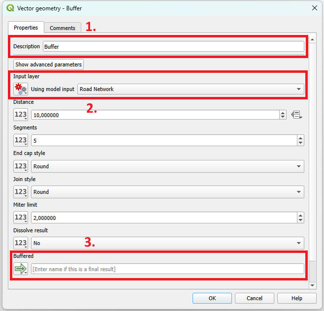
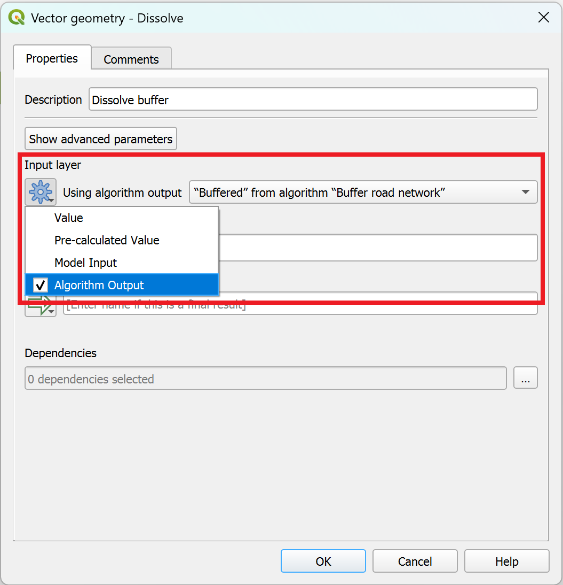
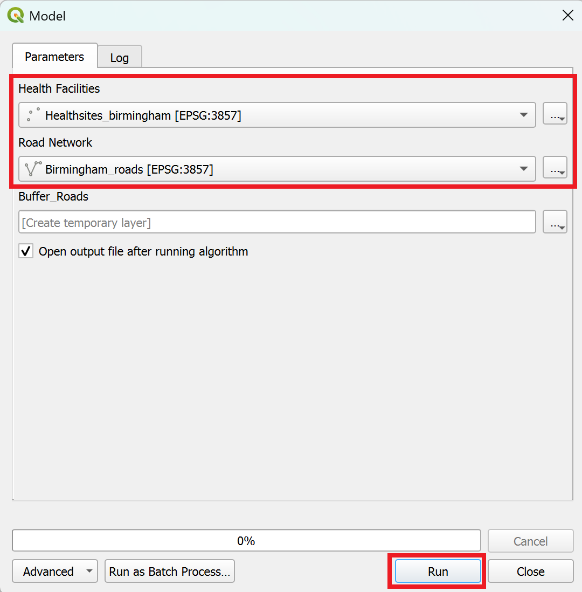

Automation in QGIS (The Model Builder)#
What is the need for Automation?#
Automation streamlines tasks by reducing the user effort and minimizing errors through less manual repetition. It allows for modularization, enhances reusability and reduces redundancy by repeatedly using a defined set of needed tools. In QGIS it can be achieved by using the “Model Designer”.
The QGIS Model Designer#
The Model Designer is a visual tool that allows users to create and edit a workflow with all tools available in QGIS that can be used repeatedly in a simple and time-efficient manner. It provides a graphical interface to build workflows by connecting geoprocessing tools and algorithms. The user can define inputs, outputs, and the flow of data between different processing steps.
Using the Model Designer/Graphical Modeler#
Open the tool under
Processing->Graphical ModelerSave the model file in a folder of your choosing by clicking on the
Save model as-button in the top bar.Open an existing model via
Model->Open Modeland navigating to the model file
Model Components#
There are two types of model components, that you can use to create workflows:
Inputs: The model starts with input data. These can be vector layers, raster layers, csv-files, or even values or expressions. Most of the time, you will use layers as inputs.
Algorithms: The processing steps are made up of algorithms or tools available in QGIS, such as clipping, reprojecting, joining by attribute values, etc.
Building a Model#
Adding Inputs
You can add inputs to the model via the
Inputs-tab on the left of the model builder window by either Double-clicking on it or dragging it onto the model builder canvas.Once added, a new window will open where you can specify the description of the input, which will appear as the title, as well as the geometry type for vector data and select whether it is a mandatory or optional input for the workflow.
Adding Processing Steps:
In the
Algorithms-panel on the left of the model builder window, you can choose processing steps or algorithms from the QGIS processing toolbox. For example, the “buffer” tool for buffering a road network with a 500 meter radius.To add an algorithm, simply Double-click on it or drag it onto the model builder canvas.
Once added, the algorithm’s parameter window will open. It will look similar to the normal parameters window for that algorithm with a few exceptions:
You can add a description
You must define the
Input layeras either a model input or the output of another algorithm in the model.The output of the algorithm can be defined as a model output by entering a name.
Some other differences might appear depending on the algorithm.
{kind=link}

The parameters page for the “Buffer”-algorithm in the model builder#
Once you have set the parameters, click
Ok.
Adding More Processing Steps
You can chain several algorithms by selecting
Algorithm Outputfor theInput layerand selecting an output from a previous algorithm
{kind=link}

Selecting “Algorithm output” as Input layer to chain several processing steps together.#
Executing the Model
To run the model click the green arrow in the top bar, a new window will open where you will have to enter/specify your inputs, then click “Run”. Output layers are automatically added to your QGIS project interface.
Once you are finished creating your workflow, or you want to test the result of your model, you can execute the model. This will automatically perform all the processing steps you entered into the graphical modeler, and create layers in your QGIS-project for the defined outputs:
In the top bar of the model builder window, click on the
Run model-button.A new window will open, this is where you define which layers of your QGIS-project will function as the input layers of your model.
Click
Run. Once finished, the calculated or processed layers will appear in your main QGIS canvas.
{kind=link}

Selecting the inputs before running the model.#